Collective Operations
Motivation: AI Training
As you’ve probably read in the news, AI (artificial intelligence) is a very active area of research. Modern AI systems require training models on huge amounts of data.
For these notes, we will completely ignore the details of how these models work. All you need to know is that we start with some untrained model: think of this as a big matrix filled with random numbers. Then, we use train the model using a huge amount of training data: think of this as running many matrix multiplication operations (i.e. multiplications and additions) with the training data and the model. Eventually, the output is a trained model: think of this like the big matrix from before, but now filled with useful numbers.
In reality, AI training is far more complicated than this. For example, the training process is iterative: you’ll run the model on some training data, and see how well you did. Then, you’ll compute an error term based on the mistakes you made, and use that to update your model. We will not care about any of this. We’ll just think of training as a black box that runs lots of matrix multiplications on very very big datasets.
Distributed Training
AI training jobs are far too large to be run serially on a single computer. If you ran the matrix multiplication by multiplying numbers together one at a time, your training job would never finish. Instead, we need to parallelize these jobs so that many operations (e.g. multiplications) are being run at the same time. There are many approaches to distributed computing, each of which parallelizes the job along a different dimension:
We could split up the training data so that each node is training on a different subset of the data.
We could split up the model itself, so that each node is training a different subset of the model.
We could pipeline the operations, so that each node is running a different subset of the operations. For example, if the desired operation is “add 5” followed by “square the number,” we could split this up so that your node do the addition, and then pass the result to me so that my node can do the squaring. Then, every piece of data passes through your node first, and then my node, to complete the overall operation.
Again, we will completely ignore the details of how the work is distributed. We have some large task, and it has been split up into smaller sub-tasks.
One important thing that we do care about is how these nodes synchronize with each other. These nodes will often need to communicate with one another to ensure that their states are consistent. Also, after running some operation, it could be the case that each node has a piece of the output, and everyone needs to coordinate to combine those pieces into the full output.
By combining our picture of the training model with our picture of distributed computing, we have a very high-level overview of what distributed training looks like:
-
Split the task up into sub-tasks. Each node runs a sub-task.
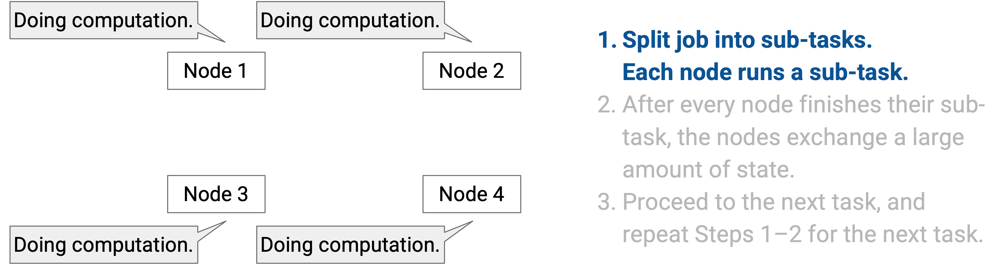
-
After every node finishes their sub-task, everyone exchanges a large amount of state.
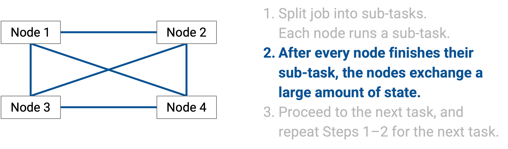
-
Proceed to the next task, and repeat steps 1-2 for the next task.
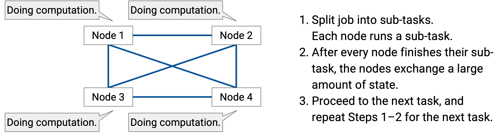
Our focus is the data exchange in the second step, and how to make this data exchange efficient.
Again, we don’t care about exactly what data is being exchanged. Depending on how we distribute the work, and depending on the specific AI model we’re building, the nature of the data we’re exchanging can be slightly different. Our focus is on how that data is exchanged.
Distributed Training Infrastructure
When we split up a training job amongst many nodes, what exactly is each node?
Each node could be a computer running a standard CPU, but in reality, nodes are specialized GPUs (Graphics Processing Units). These are processing chips that are specially designed to run AI operations (e.g. matrix multiplication) very efficiently. Instead of GPUs, nodes could also be TPUs (Tensor Processing Units), which are AI-optimized chips developed by Google.
A single training job could be run on a few hundred nodes, or even tens of thousands of nodes, depending on the size and context of the job, and how powerful each node is.
The GPUs are inter-connected in a datacenter-like network, which gives us the datacenter benefits that we’ve previously seen: The nodes are physically close to each other (e.g. in the same building). The nodes are organized in a structured topology (e.g. Clos network). The nodes are homogenous (all built the same), and the links have very high bandwidth.
If you look inside an AI training datacenter, you’ll see servers organized into racks, just like in any other datacenter. However, unlike other datacenters we’ve seen so far, each server contains of one or more GPUs for AI computation. The server can also have a regular general-purpose CPU for miscellaneous operations, although the CPU is typically not that strong and is not doing the bulk of the computation work. All the GPUs on the server use the same NIC to exchange data with other servers.
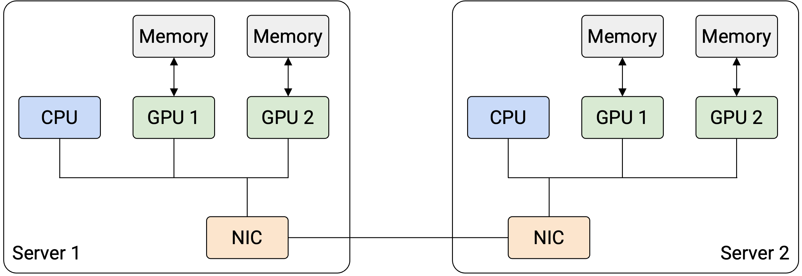
Because each server has multiple GPUs, we have to slightly modify our network topology abstraction. As before, the servers are connected with switches and high-bandwidth links. However, we now also have to consider the possibility of two nodes on the same server talking to each other. Communication within the same server is extremely efficient compared to communication across servers, so we can model intra-server communication as a link with infinite bandwidth and zero latency.
Each GPU could have its own dedicated memory, and we can use techniques like RDMA to speed up transferring data between one GPU’s memory and another GPU’s memory.
There are many different topologies for inter-connection between racks, though for our purposes, we’ll use a fat-tree Clos topology to connect the racks. Regardless of which topology you use, some pairs of GPUs will be closer (e.g. GPUs in the same server can communicate without using the network at all), other pairs of GPUs will be further away (e.g. GPUs on different servers, but in the same pod/rack, connected via a single switch), and other pairs of GPUs will be the furthest away (e.g. GPUs on different racks, connected via multiple hops). The closer pairs of GPUs can communicate with higher bandwidth and less latency, compared to the further pairs of GPUs. In summary, if you pick any pair of nodes, some pairs are better-connected than others.
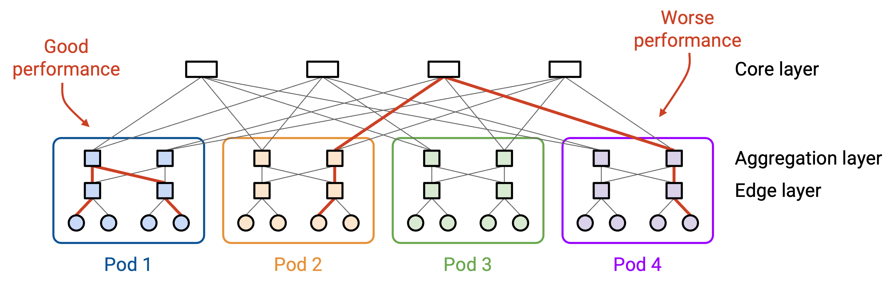
Other topologies exist as well. TPUs are built with a router directly on them, so it’s possible to directly connect TPUs into a network without any switches at all. One common topology with TPUs is to inter-connect them in a 3D torus, which looks like a cube with the edges wrapping around. For example, if you reach the top of the cube and traverse an upwards link, you end up at the bottom of the cube. Or, if you reach the front of the cube and traverse a front-facing link, you end up at the back of the cube. Just like in the Clos topology, some pairs of nodes are closer (e.g. direct neighbors), while other pairs of nodes are further (e.g. multiple hops away).
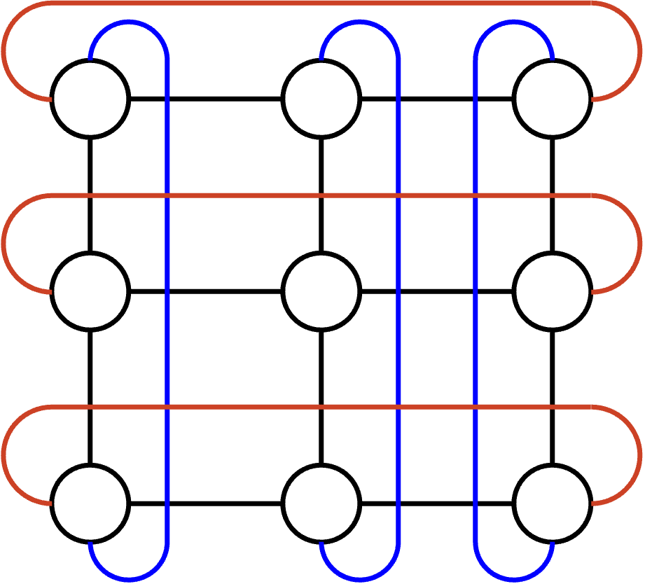
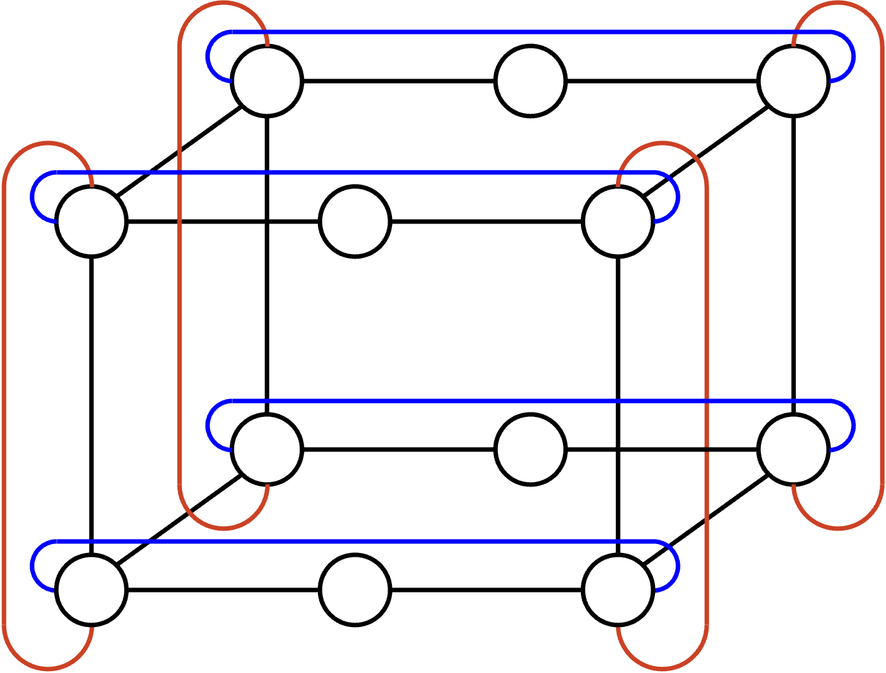
Collective Communication: Definition
Now that we know the task (distributed computing) and the infrastructure we’re running the task on (datacenter-like network of GPUs/TPUs), we can formally define the problem we want to solve.
The textbook definition of collective communication is: A group of nodes that exchange data in a coordinated manner as part of a group computation. Informally, the idea is that many nodes work together to achieve a common goal, and the nodes have to exchange data during that process.
The ideas and terms behind collective communication were originally developed many decades ago in the context of supercomputers. The topic has once again become an active area of research thanks to recent advances in AI. Modern implementations of Collectives Communication Libraries include NCCL (Nvidia), MSCCL (Microsoft), TCCL (Thunder Research Group), and so on. The code for NCCL is available online if you’re interested.
What makes collective communication different from everything we’ve seen so far? There are 3 main differences we’ll look at.
Highly structured communication: So far, when we think about the network, we’ve abstracted away the data being exchanged. We don’t know ahead of time who wants to communicate, and we build our networks so that any pair of hosts can communicate, at any time they want.
By contrast, in collective communication, there is a very specific goal that the nodes want to achieve, and we know this goal ahead of time. This means that unlike in the general Internet, we have a very well-defined structure of what data is being exchanged through the network, and when that data needs to be exchanged. In other words, we have a tightly-scripted set of data exchanges and computations that all the nodes will work together to achieve.
Dedicated network infrastructure: So far, we’ve built networks that can support multiple connections happening at the same time. Even within a datacenter network, multiple tenants could be sending data over the datacenter network at the same time.
By contrast, AI training jobs are so large that they are often run on dedicated infrastructure. The training job is the only job running on the network, and no other data is being sent over the network. This means that we can predict exactly how much bandwidth is being used at any given time.
Data is transformed as it’s exchanged: So far, when we think about sending data through the Internet (e.g. the HTTP/TCP/IP stack), our mental model is that the server has some data (e.g. a file), and they want to send a copy of that data to the user.
By contrast, when running a collective operation, the data can be transformed as it is sent through the network. This is different from anything we’ve seen so far. The operations are usually fairly simple (e.g. computing sums), but it does mean the data sent by the sender(s) is not necessarily the same as the data received at the other end.
We could design a coordinated communication schemes from scratch for every AI model we build, but this would be tedious and result in lots of repeated work. Instead, we’ll define a set of basic communication patterns called collectives. Then, we can use these collectives as basic building blocks to design coordinated communication schemes for specific jobs. You can think of the basic collective operations as the API for distributed communication, e.g. the library functions available to the users. Then, the users can call these collective functions in various ways to achieve their specific goals.
It turns out that we only need a relatively small number of primitive collective operations, and most of the tasks in AI training can be broken down into these operations, and represented as various combinations of these operations.
Our focus will be on what these collectives are, and how they are implemented in the network. We won’t discuss why AI training leads to these particular collective operations. The reason why we picked these particular operations as our basic building blocks has more to do with the nature of AI computation, which is beyond our scope.
Collective Operations: Setup
We’ll now define the 7 basic collective operations. We will define what the operations should do, by specifying an input (the data each node is holding before the operation), and a corresponding output (the data each node is holding after the operation). We are not specifying how the operation is implemented in the network (that will come later).
Input: There are \(p\) nodes. In our examples, we’ll set \(p=4\) but other values are fine too.
Each node has a \(p\)-element vector of data. For these examples, you can think of the data as an array of 4 integers. In practice, this data could be higher-dimensional as well, e.g. 4 rows of a matrix, or 4 equally-sized chunks of training data.
Output: The elements are moved around between nodes in some specified way. The output specifies what values go in which boxes as a result of this operation.
Also, sometimes the elements can be aggregated (e.g. summed together). Again, the output specifies what computation(s) this specific operation does, if any, and which box(es) to put the computation result(s) in.
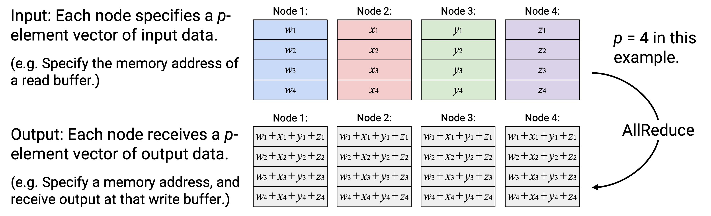
Before the collective operation occurs, some additional coordination needs to take place so that each node knows its own number and the total number of nodes (e.g. “You am node 1, and there are 4 nodes in total”). This additional coordination is beyond our scope, but you can imagine that some centralized scheduler or controller will distribute this information to the nodes and set up the job.
To execute a collective operation, each node runs the exact same code, in parallel, at the same time. Everyone independently calls the same collective operation to start the operation, and when the operation completes, the output should match the operation definition. Ideally, the nodes have identical hardware resources, so that they all finish at the same time. If some nodes are slower than others, the operation is blocking, which means that we have to wait for everybody to finish the operation before we can proceed to the next task.
In summary, collective operations are orchestrated by a controller that sets up the job. The operation is synchronized (everyone starts at the same time), homogenous (ideally everyone finishes at the same time), and blocking (must wait for everyone to finish before moving on).
With the setup complete, we’re now ready to see how the 7 collective operations are defined. The operations can be roughly separated into two categories: 4 of the operations are about redistribution (moving data around without transforming it), and 3 of the operations are about consolidation (aggregating many pieces of data into a single output).
Operation: Broadcast
English description: Take the entire vector in a specified root node, and send a copy of that entire vector to every node.
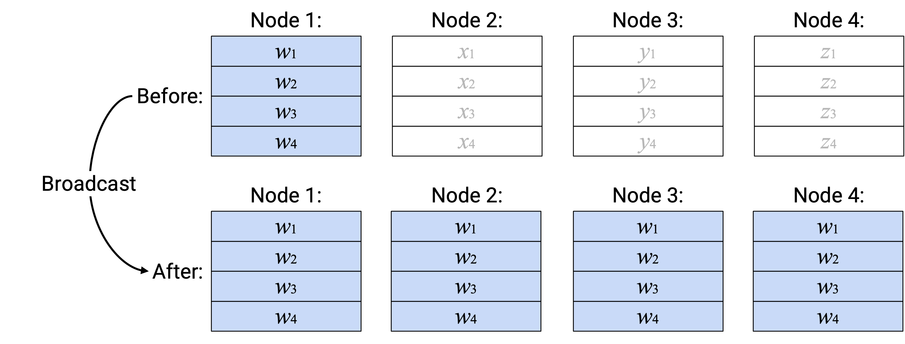
Note: This diagram is showing a Broadcast operation with Node 1 as the root node, but we could also do the operation with a different root node. The user running the Broadcast operation must specify the root node as one of the “arguments” to the operation.
Note: The input vectors in the non-root nodes are not used to create the output. You can think of them as arguments to a function that don’t actually get used.
Note: Each node’s input and output vector don’t necessarily have to be stored in the same location. If you used the same memory address to hold both the input and output vector, then some operations (like Broadcast) would overwrite the input data with the output data. Alternatively, you could use a different memory address to hold the output vector.
Operation: Scatter
English description: Take the entire vector in a specified root node. Send the \(i\)th element of this vector to the \(i\)th node.
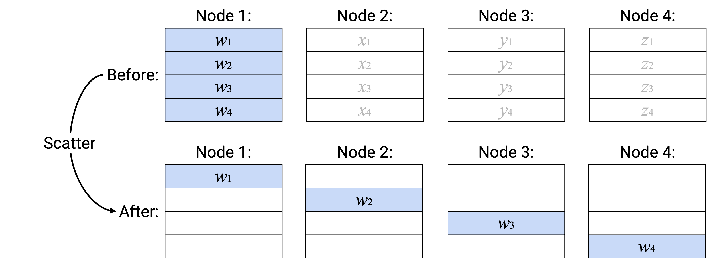
Note: Just like Broadcast operation, you can specify any of the nodes to be the root node. Also, just like the Broadcast operation, the input vectors for the non-root nodes are not used to create the output (think: unused arguments to the function).
Operation: Gather
English description: Build a new vector, where the \(i\)th element is defined as the \(i\)th element from the \(i\)th node. Send this vector to a specified root node.
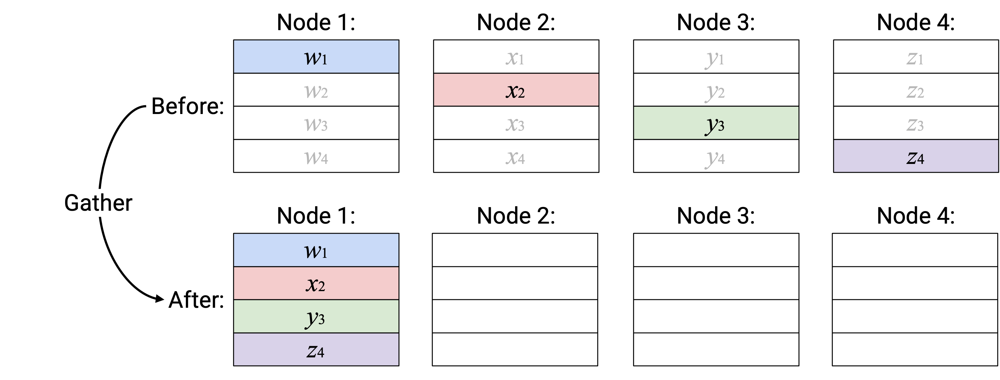
Note: In this operation, nothing is stored in the receive buffers of the non-root nodes.
Operation: AllGather
English description: Build a new vector, where the \(i\)th element is defined as the \(i\)th element from the \(i\)th node. Send a copy of this new vector to every node.
Alternative description (equivalent to above): Node \(i\) broadcasts its \(i\)th element, so that it becomes the \(i\)th element of every node’s output vector.
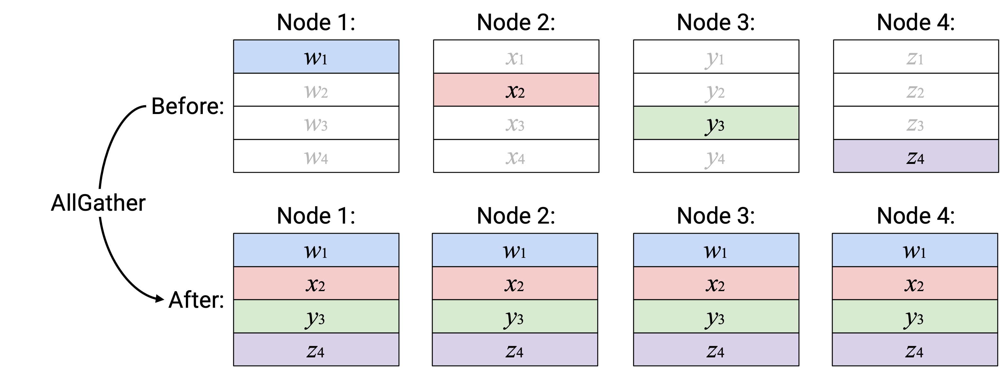
Operation: Reduce
English description: Compute the element-wise sum of all the vectors, and send the resulting sum vector to a specified root node.
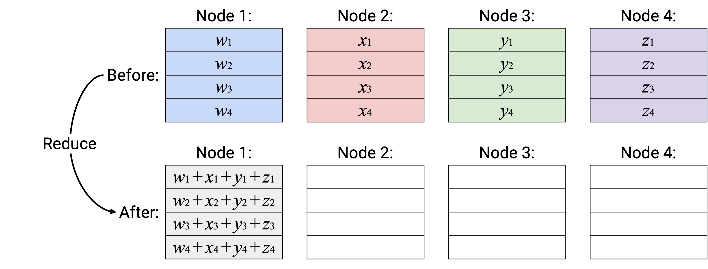
For these notes, we’ll use summation as our reduction operation, but other reduction operations could exist. For example, we could swap out addition for multiplication in the Reduce operation (or ReduceScatter or AllReduce). Reduction operations are typically associative and commutative, which roughly means that you can do them in any order and still get the same result (e.g. addition is associative and commutative).
Operation: AllReduce
English description: Compute the element-wise sum of all the vectors, and send a copy of the resulting sum vector to all nodes.
Operation: ReduceScatter
English description: Compute the element-wise sum of all the vectors. Send the \(i\)th element of the sum vector to the \(i\)th node.
Alternative description (equivalent to above): The \(i\)th element of each node is summed, and the resulting sum (scalar) is sent to node \(i\).
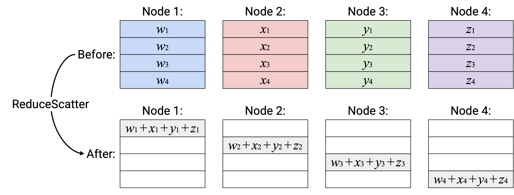
Duals
Some pairs of operations are duals of each other. Roughly speaking, this means that one operation is the reverse of the other operation. For example, in math, you could say that squaring and square root are duals of each other.
When checking if a pair of operations form a dual pair, we ignore any reduction computations. We only care about which boxes get written to in the output, regardless of what value is written to those boxes.
Broadcast and Reduce are duals of each other. Broadcast reads from the 4 boxes in the root node, and writes to all 16 boxes in all nodes. Reduce does the reverse: It reads from all 16 boxes in all nodes, and writes to the 4 boxes in the root node.
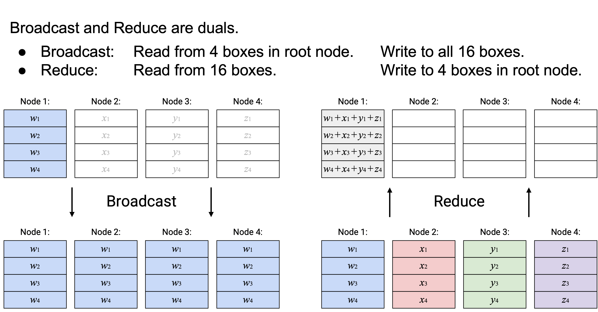
Scatter and Gather are duals of each other. Scatter reads from the 4 boxes in the root node, and writes to to the \(i\)th box of the \(i\)th node (4 boxes in total). Gather does the reverse: It reads from the \(i\)th box in the \(i\)th node (4 boxes in total), and writes to the 4 boxes in the root node.
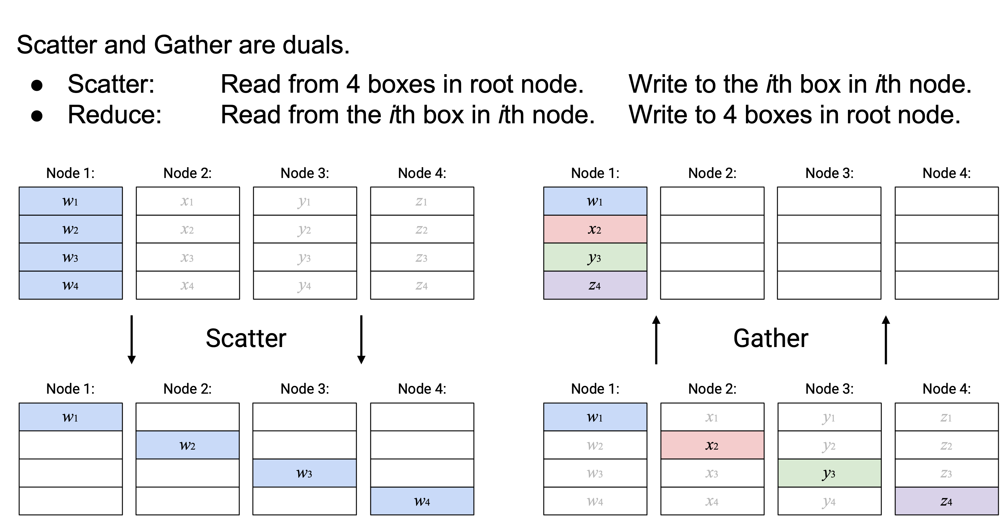
AllGather and ReduceScatter are duals of each other. AllGather reads from the \(i\)th box in the \(i\)th node (4 boxes in total), and writes to all 16 boxes in all nodes. ReduceScatter does the reverse: It reads from all 16 boxes in all nodes, and writes to the \(i\)th box of the \(i\)th node (4 boxes in total).
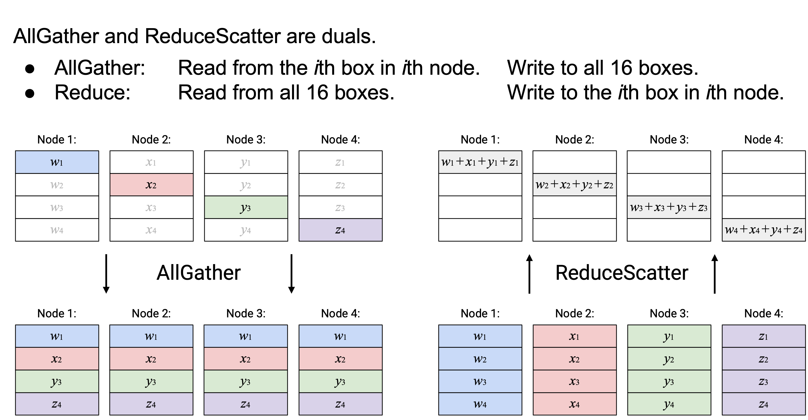
AllReduce does not have a dual. Alternatively, you could view AllReduce as its own dual, since it reads from all 16 boxes and writes to all 16 boxes.
The idea of duals is useful when we start thinking about the implementations of these collectives. For a specific topology and routing scheme, a collective and its dual will have the same performance (e.g. same total bandwidth usage), since the total amount of data sent and received is the same in both the collective and its dual.
Compositing Operations
Users can combine multiple operations to get their desired operation.
For example, AllReduce could equivalently be expressed as a ReduceScatter, followed by an AllGather.
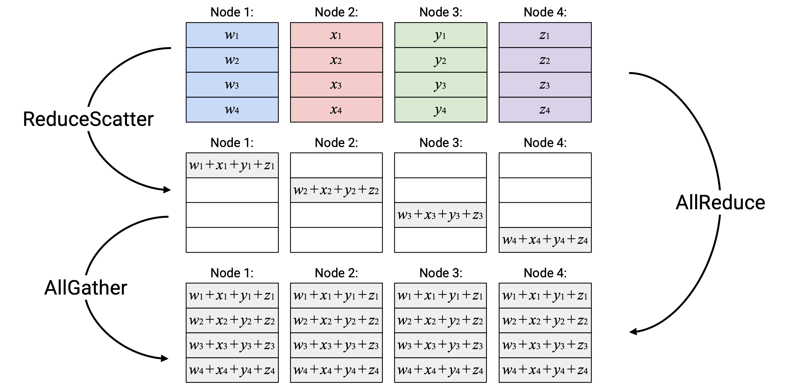